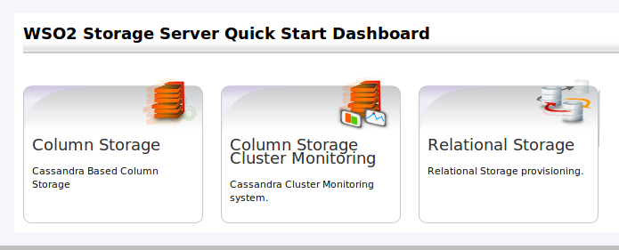

WSO2 Storage Server allows system administrators and developers to easily create and mange Relational databases and Column stores.
Figure1: WSO2 Storage Server Home Page
WSO2 Column Storage is a Cassandra based multi-tenanted column store database.
Column storage Cluster Monitor helps to maintain a healthy Cassandra Cluster.
Relational Storage service helps to create and manage relational databases.